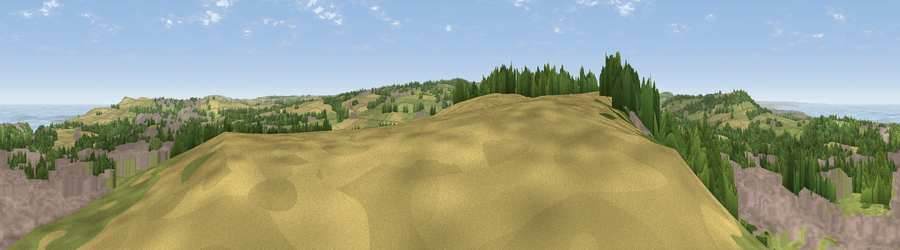

Viewpoint near Skelton-in-Cleveland
#4656 in England · top 19% of its area beats it · near Skelton-in-ClevelandWhere it is
The exact computed spot (NZ 66112 18825). Click the marker for map links.
The view, rendered

A 360° render of this exact spot computed from the terrain model, tree cover and land cover — summer colours, afternoon light, calibrated against photographs of famous viewpoints. Real trees, hedges and buildings will differ in detail.
The panorama
Grey silhouette: terrain skyline in each direction (720 bearings, Earth curvature and refraction included). Dashed green: skyline with trees (+15 m) and buildings (+8 m) as obstacles. Blue strip: how far the ground is visible on each bearing.
Where the view opens
Wedge length = distance to the farthest visible ground on that bearing (vegetation-aware). Rings at 10, 25 and 50 km.
What fills the view
35% built-up · 26% grassland · 20% woodland · 14% cropland · 6% water
Angular shares of the visible panorama (visual magnitude), not map area. Landscape diversity 0.64 (0–1 Shannon).
Key numbers
More beautiful places nearby
The staircase of upgrades: each row has a higher view potential than everything closer. Driving times are estimates from straight-line distance, calibrated against real road routing — check an actual route before setting out.
| Place | Direction | Drive | Score |
|---|---|---|---|
| Viewpoint near Skelton Green | SW · 2 km | ~5 min | 73.4 |
| Viewpoint near Charltons | SW · 3 km | ~7 min | 81.1 |
| Warsett Hill | NE · 4 km | ~9 min | 86.8 |
| Viewpoint near Easington | E · 8 km | ~16 min | 90.2 |
| The Knoll | SSW · 445 km | ~417 min | 91.0 |
54.56035, -0.97916 · source: screening · position refined by local search. Computed location — check access rights before visiting.